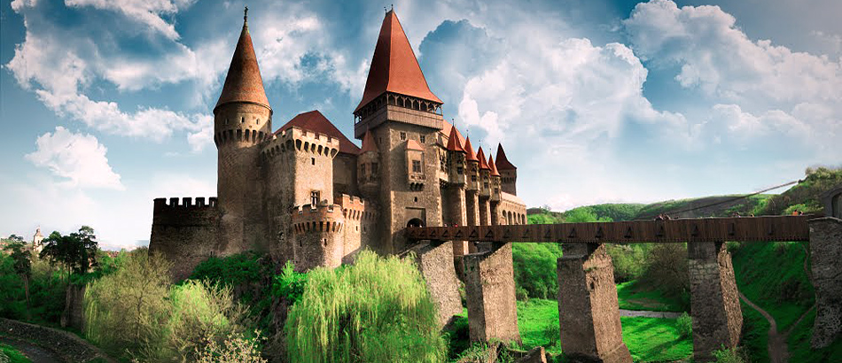
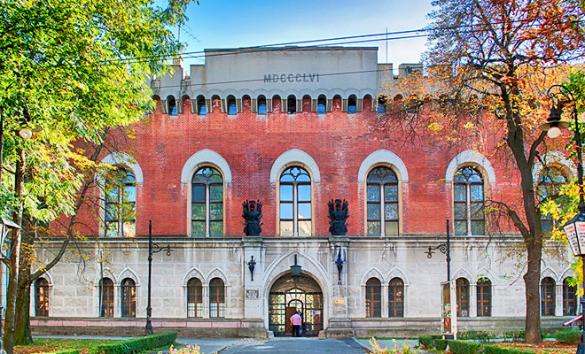

Castelul Marghiloman din orasul Buzau, judetul Buzau
Asezat la periferia orasului Buzau, Castelul Marghiloman a fost ridicat de catre Iancu Marghiloman in anul 1882. Durata constructiei a fost una de scurta durata, in nici cinci ani Iancu Marghiloman reusind sa cladeasca in aceste locuri un adevarat palat. Castelul Marghiloman a suferit numeroase modificari realizate de catre fiul lui Iancu Marghiloman, Alexandru care a urmat sfaturile unui arhitect francez numit Paul Gottreau, cu renume in renovarea si constructia a numeroase cladiri de insemnatate pentru tara, printre care putem enumera Casa de Economii si Consemnatiuni din Bucuresti ?i FundatiaUniversitara Carol I din Capitala. Castelul Marghiloman din Buzau a fost admirat de-a lungul timpului de numerosi turisti, fiind o cladire impunatoare, respectand stilul arhitectural frantuzesc. In aceeasi curte a fost ridicata si vila Albatros avand ca destinatie primirea oaspetilor. Castelul Marghiloman avea 31 de incaperi, numarandu-se printre cele mai elegante cladiri de acest gen din tara. Pereti imbracati cu matase, parchet din lemn masiv, toate au incantat privirile multor oaspeti veniti aici in numeroase dineuri organizate de proprietarii acestuia. Ceea ce este de remarcat este splendoarea parcului care il inconjura, amplasat pe un teren destul de intins, dotat cu helesteu si lac, dar si cu locuri pentru calarit.
Castelul Corvinilor din orasul Hunedoara
Castelul Corvinilor este unul dintre cele mai importante opere arhitecturale de arta feudala gotica din Europa, fiind cunoscut si ca principala resedinta a lui Iancu de Hunedoara. Asa cum aminteam, castelul a fost ridicat in vremea lui Iancu de Hunedoara, in locul unei stanci acolo unde curge paraul Zlasti. Daca incercam sa aruncam o privire asupra stilului arhitectural vom putea observa o cladire impunatoare, cu acoperisuri deosebit de inalte si solide, frumos colorate, cu ferestre destul de largi si luminoase. Astazi, castelul Corvinilor este vizitat de mii de turisti din tara si strainatate, scopul sau devenind altul – acela de obiectiv turistic muzeal de maxima importanta.

Castelul Huniade din orasul Timisoara, judetul Timis
Castelul Huniade a fost ridicat pe ruinele unui vechi castel, in perioada 1443-1445, pe vremea cand Iancu de Hunedoara era numit comite al Timisoarei. Asa cum mentionam, structura castelului Huniade a fost ridicata tinandu-se cont de amplasamentul unui castel construit cu foarte mult timp in urma, din acesta ramanand doar ruinele. Castelul Huniade a servit pentru resedinta lui Iancu de Hunedoara. Acesta are in structura sa o curte patrata si un singur turn la intrare. La fel ca si celelalte castele ce respecta acelasi gen, castelul Huniade prezinta Sala Cavalerilor ca fiind cea mai reprezentativa pentru acesta. Turnul castelului prezinta ferestre destul de dese si de mici, acoperisul sau este in forma dreapta, iar forma acestuia este rectangulara. De-a lungul timpului, castelul a servit drept loc de sedere pentru toate personalitatile din conducerea statului roman.
Revin-o la Pagina Principala